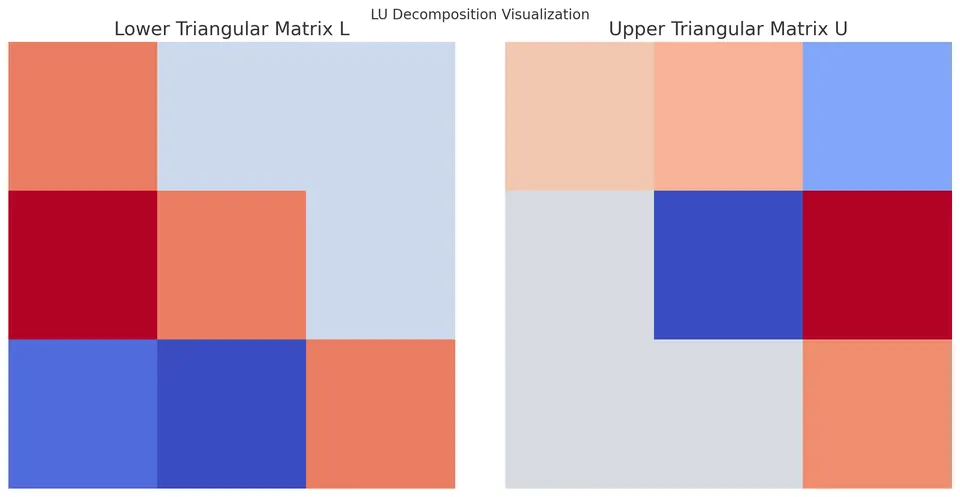

LU Decomposition (or LU Factorization) is a powerful and widely used technique in numerical linear algebra for solving systems of linear equations, computing inverses, and determining determinants. The core idea is to factorize a given square matrix $A$ into the product of a lower-triangular matrix $L$ and an upper-triangular matrix $U$. This approach is particularly useful as it reduces complex operations such as solving $A \mathbf{x} = \mathbf{b}$ into simpler, more structured subproblems. Once the decomposition $A = LU$ is found, solving the system becomes a matter of performing forward and backward substitutions, which are both computationally inexpensive compared to other direct methods like Gaussian elimination performed from scratch for each right-hand-side vector $\mathbf{b}$.

Consider a square $n \times n$ matrix $A$:
$$ A = \begin{bmatrix} a_{11} & a_{12} & a_{13} & \cdots & a_{1n} \\ a_{21} & a_{22} & a_{23} & \cdots & a_{2n} \\ a_{31} & a_{32} & a_{33} & \cdots & a_{3n} \\ \vdots & \vdots & \vdots & \ddots & \vdots \\ a_{n1} & a_{n2} & a_{n3} & \cdots & a_{nn} \end{bmatrix} $$
The LU decomposition expresses $A$ as:
$$A = LU$$
where
$$ L = \begin{bmatrix} 1 & 0 & 0 & \cdots & 0 \\ l_{21} & 1 & 0 & \cdots & 0 \\ l_{31} & l_{32} & 1 & \cdots & 0 \\ \vdots & \vdots & \vdots & \ddots & \vdots \\ l_{n1} & l_{n2} & l_{n3} & \cdots & 1 \end{bmatrix} $$
$$ U = \begin{bmatrix} u_{11} & u_{12} & u_{13} & \cdots & u_{1n} \\ 0 & u_{22} & u_{23} & \cdots & u_{2n} \\ 0 & 0 & u_{33} & \cdots & u_{3n} \\ \vdots & \vdots & \vdots & \ddots & \vdots \\ 0 & 0 & 0 & \cdots & u_{nn} \end{bmatrix} $$
Here, $L$ is lower-triangular with ones on the diagonal, and $U$ is upper-triangular. The factorization is not always guaranteed to exist unless certain conditions are met (e.g., no zero pivots without partial pivoting, or $A$ being nonsingular and well-conditioned).
The derivation of the LU decomposition closely follows the steps of Gaussian elimination. Gaussian elimination transforms the matrix $A$ into an upper-triangular matrix by adding multiples of one row to another. These multipliers can be stored in the entries of a lower-triangular matrix $L$.
Starting from:
$$A\mathbf{x} = \mathbf{b}$$
we write $A = LU$. Substitute to get:
$$(LU)\mathbf{x} = \mathbf{b}$$
Introducing an intermediate vector $\mathbf{c}$:
$$U\mathbf{x} = \mathbf{c} \implies L\mathbf{c} = \mathbf{b}$$
Since $L$ is lower-triangular and nonsingular (with ones on its diagonal), we can quickly solve for $\mathbf{c}$ using forward substitution. Once $\mathbf{c}$ is known, we solve the upper-triangular system $U\mathbf{x} = \mathbf{c}$ via backward substitution.
The process of determining $L$ and $U$ essentially mimics the elimination steps:
I. Use the first row of $A$ to eliminate entries below $a_{11}$.
II. Store these elimination factors in $L$.
III. After the first column is dealt with, the submatrix of $A$ (excluding the first row and column) is similarly factorized.
IV. This process continues recursively until $A$ is fully decomposed into $L$ and $U$.
Given an $n \times n$ matrix $A$, the LU decomposition algorithm without pivoting can be described as follows:
I. Initialization:
Set $L = I$ (the $n \times n$ identity matrix) and $U = 0$ (the $n \times n$ zero matrix).
II. Main Loop (for $i = 1$ to $n$):
Compute the diagonal and upper elements of $U$:
For $j = i$ to $n$:
$$u_{ij} = a_{ij} - \sum_{k=1}^{i-1} l_{ik} u_{kj}.$$
Compute the lower elements of $L$:
For $j = i+1$ to $n$:
$$l_{j i} = \frac{1}{u_{ii}}\left(a_{j i} - \sum_{k=1}^{i-1} l_{jk} u_{k i}\right).$$
III. After these loops complete, $A = LU$ is obtained.
IV. Solving $A\mathbf{x} = \mathbf{b}$:
Forward substitution for $L\mathbf{c} = \mathbf{b}$:
For $i = 1$ to $n$:
$$c_i = b_i - \sum_{k=1}^{i-1} l_{ik} c_{k}.$$
Backward substitution for $U\mathbf{x} = \mathbf{c}$:
For $i = n$ down to $1$:
$$x_i = \frac{c_i - \sum_{k=i+1}^{n} u_{ik}x_{k}}{u_{ii}}.$$
Consider the system of equations:
$$ \begin{aligned} 2x + 3y - 4z &= 1, \\ 3x - 3y + 2z &= -2, \\ -2x + 6y - z &= 3. \end{aligned} $$
In matrix form:
$$ A = \begin{bmatrix} 2 & 3 & -4 \\ 3 & -3 & 2 \\ -2 & 6 & -1 \end{bmatrix} $$
$$ \mathbf{b} = \begin{bmatrix} 1 \\ -2 \\ 3 \end{bmatrix} $$
Step-by-Step LU Decomposition
Step 1: Initialize
Set:
$$ L = \begin{bmatrix} 1 & 0 & 0 \\ 0 & 1 & 0 \\ 0 & 0 & 1 \end{bmatrix} $$
$$ U = \begin{bmatrix} 0 & 0 & 0 \\ 0 & 0 & 0 \\ 0 & 0 & 0 \end{bmatrix} $$
Compute First Row of $U$:
$$u_{11} = a_{11} = 2, \quad u_{12} = a_{12} = 3, \quad u_{13} = a_{13} = -4.$$
Thus:
$$ U = \begin{bmatrix} 2 & 3 & -4 \\ 0 & 0 & 0 \\ 0 & 0 & 0 \end{bmatrix} $$
Compute First Column of $L$ (below diagonal):
For $i = 2$ to 3:
$$ l_{21} = \frac{a_{21}}{u_{11}} = \frac{3}{2} = 1.5, \quad l_{31} = \frac{a_{31}}{u_{11}} = \frac{-2}{2} = -1. $$
Now:
$$ L = \begin{bmatrix} 1 & 0 & 0 \\ 1.5 & 1 & 0 \\ -1 & 0 & 1 \end{bmatrix} $$
Second Pivot (i=2):
Compute $u_{22}$:
$$u_{22} = a_{22} - l_{21} u_{12} = (-3) - (1.5)(3) = -3 - 4.5 = -7.5.$$
Compute $u_{23}$:
$$u_{23} = a_{23} - l_{21}u_{13} = 2 - (1.5)(-4) = 2 + 6 = 8.$$
Thus:
$$ U = \begin{bmatrix} 2 & 3 & -4 \\ 0 & -7.5 & 8 \\ 0 & 0 & 0 \end{bmatrix} $$
For $l_{32}$:
$$l_{32} = \frac{a_{32} - l_{31}u_{12}}{u_{22}} = \frac{6 - (-1)(3)}{-7.5} = \frac{6 + 3}{-7.5} = \frac{9}{-7.5} = -1.2.$$
Update $L$:
$$ L = \begin{bmatrix} 1 & 0 & 0 \\ 1.5 & 1 & 0 \\ -1 & -1.2 & 1 \end{bmatrix} $$
Third Pivot (i=3):
Compute $u_{33}$:
$$u_{33} = a_{33} - l_{31}u_{13} - l_{32}u_{23} = (-1) - (-1)(-4) - (-1.2)(8).$$
Carefully evaluate:
$$(-1) - (-1 \times - 4) - (-1.2 \times 8) = (-1) - (4) - (-9.6) = -5 + 9.6 = 4.6.$$
Thus:
$$ U = \begin{bmatrix} 2 & 3 & -4 \\ 0 & -7.5 & 8 \\ 0 & 0 & 4.6 \end{bmatrix} $$
So finally, we have:
$$ L = \begin{bmatrix} 1 & 0 & 0 \\ 1.5 & 1 & 0 \\ -1 & -1.2 & 1 \end{bmatrix} $$
$$ U = \begin{bmatrix} 2 & 3 & -4 \\ 0 & -7.5 & 8 \\ 0 & 0 & 4.6 \end{bmatrix} $$
Forward Substitution ($L\mathbf{c} = \mathbf{b}$):
$$c_1 = b_1 = 1$$
$$c_2 = b_2 - l_{21} c_1 = -2 - (1.5)(1) = -3.5$$
$$c_3 = b_3 - l_{31}c_1 - l_{32}c_2 = 3 - (-1)(1) - (-1.2)(-3.5) = 3 + 1 - 4.2 = -0.2$$
Backward Substitution ($U\mathbf{x} = \mathbf{c}$):
$$x_3 = \frac{c_3}{u_{33}} = \frac{-0.2}{4.6} \approx - 0.0434783$$
$$x_2 = \frac{c_2 - u_{23}x_3}{u_{22}} = \frac{-3.5 - (8)(-0.0434783)}{-7.5} = \frac{-3.5 + 0.3478264}{-7.5} = \frac{-3.1521736}{-7.5} \approx 0.42029$$
$$x_1 = \frac{c_1 - u_{12}x_2 - u_{13}x_3}{u_{11}} = \frac{1 - 3(0.42029) - (-4)(-0.0434783)}{2} = \frac{1 - 1.26087 - 0.1739132}{2} = \frac{-0.4347832}{2} = -0.2173916$$